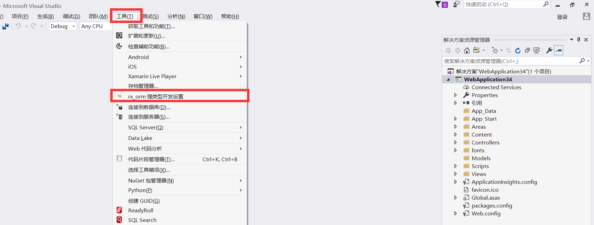
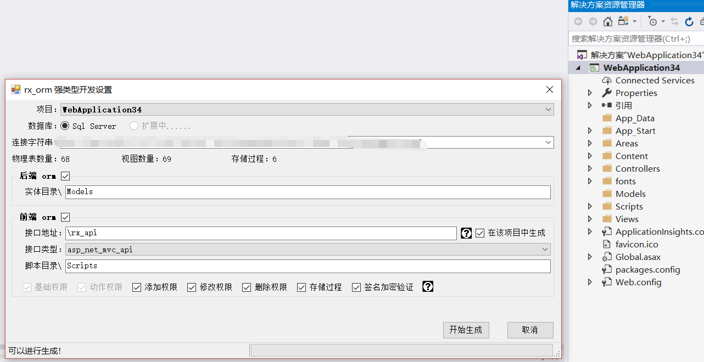
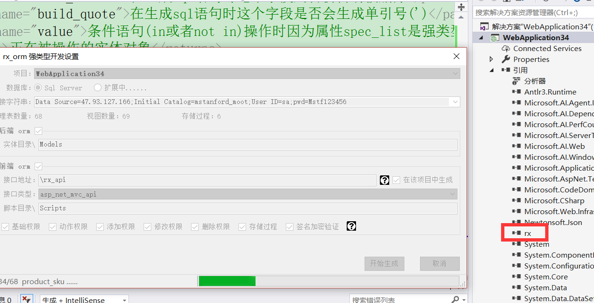
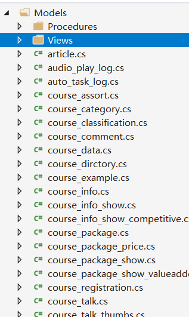
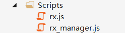
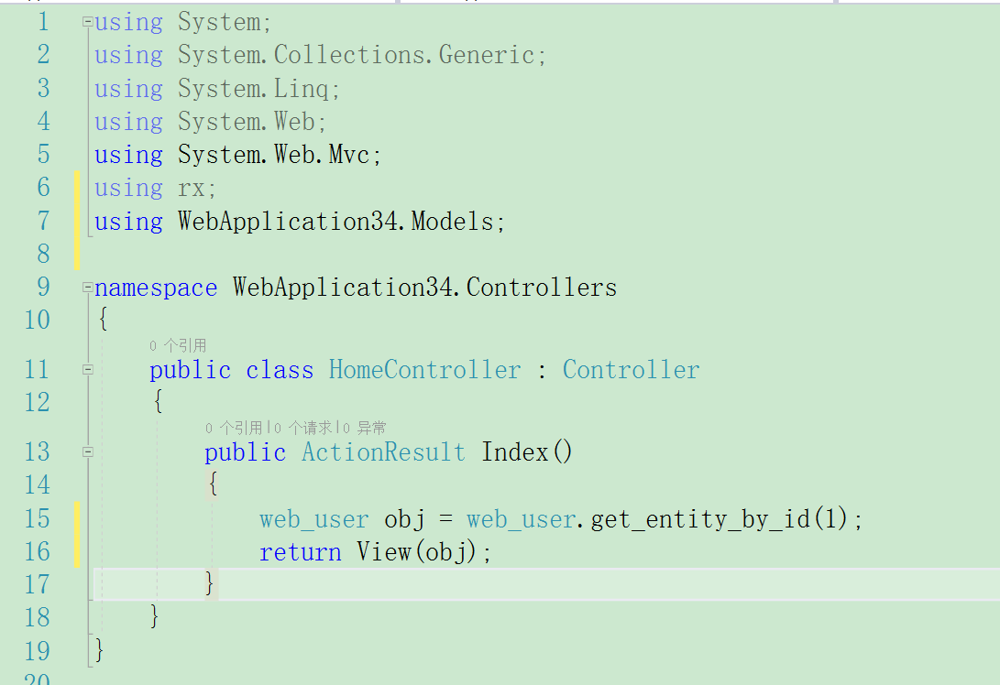
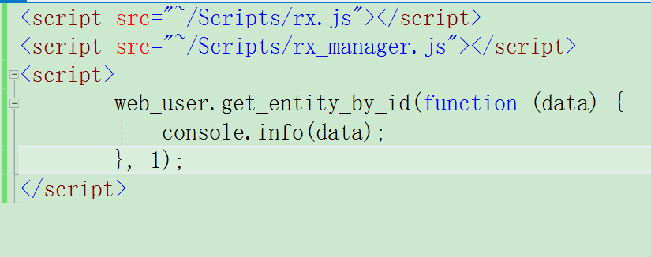

1.下载并安装 VSIX
2.打开Visual Studio创建一个mvx的web应用程序

3.插件运行界面如下，按照界面设定你需要的设置

4.点击开始生成后会自动为你生成和包装DB对象映射关系类（实体类）

5.生成完成后会在项目下看见models（表）、views（视图）、procedures（存储过程）的类文件

6.同时也能看见生成的两个js文件，rx.js是前端orm底层的一些基础对象与方式，rx_manager.js就是核心对象与方法其中也包括前端models（表）、views（视图）、procedures（存储过程）的类

7.一个后端C#的演示，查询web_user表id为1的行信息

8.一个前端js的演示，查询web_user表id为1的行信息

归纳小结：大家可以看见强类型开发确实比弱类型开发卓越的多，更多的例子可以参考【前端】与【后端】例子